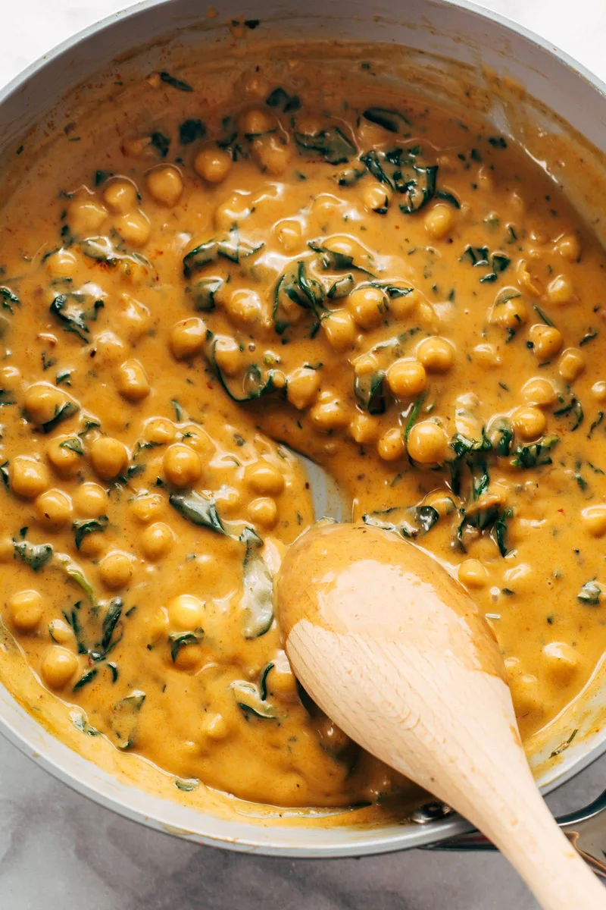

Steph's Chickpea Curry

Ingrediants
- 1 tablespoon avocado oil
- 2 cloves garlic, minced
- 1 tablespoon brown sugar (more to taste)
- 1 1/2 tablespoons red curry paste (currently loving Maesri or Thai Kitchen brand)
- one 14-ounce can full fat coconut milk
- 1 1/2 tablespoons soy sauce
- 2–3 cups fresh spinach, chopped
- 1/2 cup cilantro, chopped
- 11/2 cups jasmine rice, uncooked
Steps and Instructions
-
Cook rice according to package directions.
-
Heat the avocado oil over medium heat. Add the garlic and curry paste; sauté until softened and fragrant,
about 1-2 minutes.
-
Add the brown sugar, coconut milk, and soy sauce. Bring to a low simmer until thickened slightly.
-
Add chickpeas, spinach, and cilantro; cook until chickpeas are heated through and spinach is wilted. Mash
the chickpeas ever so slightly with the back of a wooden spoon if you want to change up the texture and make
it more creamy.
-
Taste and adjust to your liking – we often add a squeeze of lime or some extra ginger or lemongrass, but
it’s really not necessary. The flavor is totally there even with the most basic ingredient list. Serve over
rice with a dollop of chili crisp (affiliate link) and a side of pickled cucumber salad if you want (and I
promise you do want this – see notes). Top with more cilantro, if you want!
Home